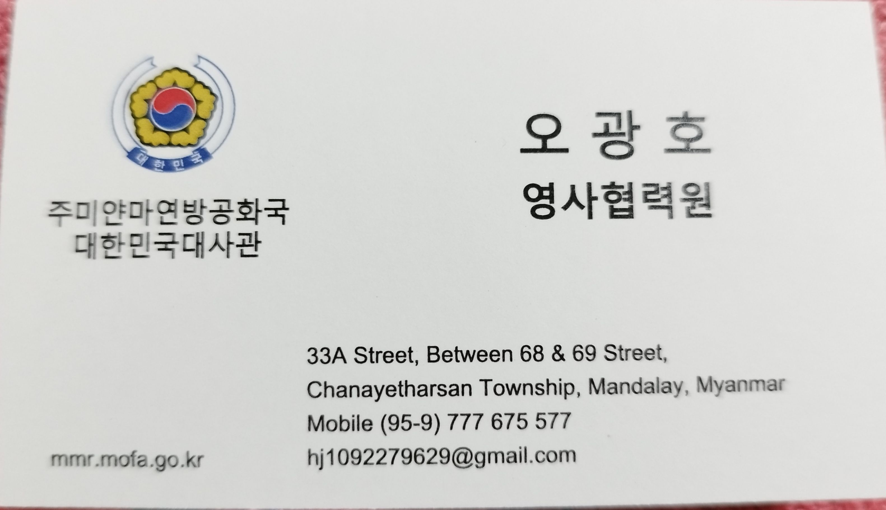
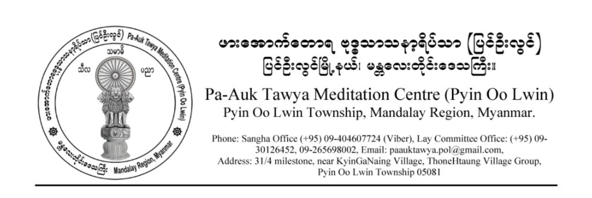
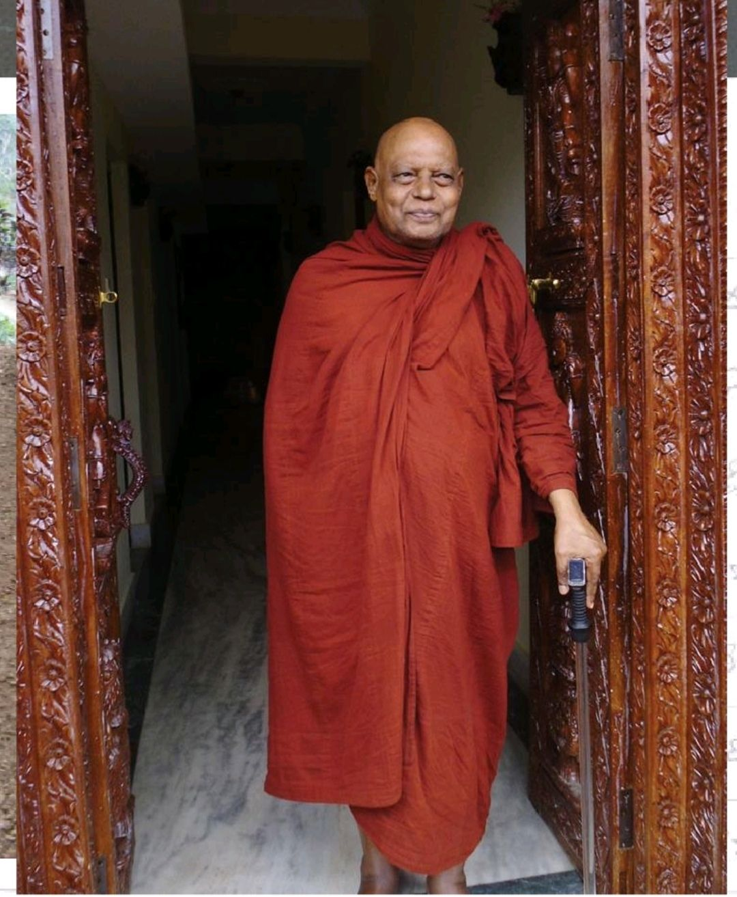

Table of Contents
1. 목차 TOC_2_gh
개요 : 삥우린 생활과 관련하여 알면 도움이 될만한 내용들을 적어둔 페이지입니다.
- 사용법: 파란색 글씨를 클릭하면 링크나 다른 페이지로 이동.
최종편집: 2025-09-24
삥우린 캘린더
2. 하루 일과
이름 시작시간 종료시간 우든 공 소리 시간 새벽 찬팅 4:00 4:30 3:30 새벽 수행 아침 공양 여명 따라 다름 아침 수행 8:00 10:00 7:15 점심 공양 10:45 11:45 10:15 오후 수행 13:00 16:00 12:45 인터뷰 및 경행 16:30 17:30 저녁 찬팅 18:00 18:30 17:30 저녁 수행 18:30 19:30
3. 승원 주요 일정
| 삥우린 일정 | 날짜 | 시작 시간(써머타임 적용) | 장소 |
|---|---|---|---|
| - 4.1 우꾸마라 사야도 인터뷰 | 매 짝수날(남)/홀수날(여) | 16:30 | 공양간 2층(남) |
| - 4.2 |
매 짝수날(남)/홀수날(여) | 15:35 | 자나까 아비왐사 꾸띠(우꾸마라 아비왐사 꾸띠 옆)(남) |
| - 3.1 오후 법문 | 매 우포사타 날 전날 | 16:30 | 공양간 2층 |
| - 3.2 오전 법문 | 매 2,4주째 일요일 | 8:00 | 공양간 2층 |
| 빠띠목카 낭송 | 빠띠목카 날 | 14:00 | 남성 법당 |
| - 3.4. 위니야 수업 | 우뽀사타 날 | 16:30 | 공양간 2층 |
- 주의사항
- 주요 일정 공지는 공양간 게시판에 게시되거나 바이버 채널(FIRE Fighter) 을 통해 미리 공지됩니다. 바이버가 설치되어 있다면 통역자나 종무소 빅쿠에게 해당 채널에 초대해달라고 문의하기 바랍니다.
- 모든 일정들은 지도 법사의 일정에 따라 변경될 수 있습니다.
- 위 시간들은 써머타임 적용 시 시간들입니다. 빠띠목카 찬팅을 제외한 모든 위 일정들은 써머타임 해제 시 30분 앞당겨 집니다. 예) 오후 법문 16:30분 -> 16:00
- 주요 일정을 제외한 일정 들은 공지를 참조 바랍니다.
4. 법문 및 수업
4.0.1. 오후 법문
- 법사: 우꾸마라 사야도
- 내용: 다양한 법문
- 비고: 통역 필요시 다음 내용 클릭하기 바랍니다: - ### 법문 통역 듣는 법 이하 동일,
- 계사가 우꾸마라 사야도가 아닐 경우 이날 닛사야 (의지처)[5]를 신청합니다. (빅쿠) , 셰얄레이들이나 재가자들은 십계를 받습니다.
- 법사가 다른 나라로 잠시 가신 경우 해당 법사와 관련된 모든 일정은 취소 됩니다.
4.0.2. 오전 법문
- 법사: 우꾸마라 사야도
- 내용: 붓다와 대제자들
4.0.3. 빠띠목카 오와다
- 법사: 주로 우꾸마라 사야도가 하지만 다른 사야도가 하시기도 합니다.
- 내용: 다양한 법문
4.0.4. 위니야 수업
- 법사: 우꾸마라 사야도
- 내용: 위니야에 대한 전반적인 내용
5. 인터뷰
5.0.1. 우꾸마라 사야도 인터뷰
- 먼저 온 빅쿠 순서대로 인터뷰 진행
- 통역 필요시 통역자에게 요청할 것 이하 동일.
5.0.2. 파욱 사야도지 줌 인터뷰
- 현재 파욱 사야도지 건강 때문에 무기한 연기 2025-09-24
- 와사 순으로 진행, 보통 미얀마 빅쿠들이 먼저 함.
- 주의사항 : 자신의 수행 당면 과제 외에 교학과 관련된 질문을 하지 말 것
5.0.3. 담마팔라 반떼 인터뷰
- 재가자들이 공양간 1층서 인터뷰 함.
6. 주요 시설들
6.0.1. 종무소
- 상가 종무소
- 시간 : 09:30 / 16:30 휴일 : 매 빠띠목카
- 다루는 일: - ### 비자 연장 , 각종 문의 사항 질문
- 비고: 주변에 상가 창고가 있습니다.
- 재가자 사무소 + 기념품 샵
- 시간 : 08:00 / 13:00 휴일: 일요일 오후 휴무
- 다루는 일: 통신 카드 마련, 필수품 관련 사항 , 택배
6.0.2. 공양간
- 보통 법랍 순으로 앉습니다.
- 빅쿠 상기까 물품 테이블이 있습니다. 본인에게 남은 공양 음식을 올려 놓거나 본인이 취할 수 있습니다.
- 빅쿠 약품 선반이 있습니다. 간단한 약은 여기서 취할 수 있습니다.
- 빤스꿀라(paṃsukūla) 가사들이 있습니다.
6.0.3. 구 법당(Old meditation hall)
- 보통 법랍 순으로 자기 자리가 있습니다.
- 빅쿠 상기까 물품 테이블이 있습니다. 본인에게 남은 공양 음식을 올려 놓거나 본인이 취할 수 있습니다.
6.0.4. 😫클리닉
클리닉 휴무 시간 장소 담당의 비고 양의 우뽀사타 전날/ 당일 / 다음날은 휴무 아침 공양 후 꾸띠 반떼 수라 빤디따 양약 한의 와사 기간 동안 안하시기도 함. 냐니 사라 반떼와 상의 꾸띠 반떼 냐니 사라 한약 및 침 치과 의료 봉사하는 치과의사 일정따라 공지됨 덴탈 클리닉 랜덤 이빨 치료
6.0.5. 기타
- 빅쿠 전용 세탁 및 건조실. 세탁기 4대와 건조기 2대가 있음. 상가 종무소 앞
- 종무소 클리닉 건물 (공사중)
- 와불상 : 압바나[2] 혹은 각종 행사.
- 스탠딩 붓다 시마 (공사중)
- 파욱 사야도지 꾸띠
- 빠리와사[1] 승원 : 빠리와사를 보내는 곳.
- 자나까 아비왐사 꾸띠
- 우꾸마라 사야도 꾸띠
- 우찬디마 사야도 꾸띠
- 발우 굽는 곳/ 염색하는 곳
7. 기타
7.0.1. 각종 특수 상황
- 물이 안 나옵니다. 전기가 안 들어 옵니다.
- 아파서 공양 갈 상황이 안됩니다.
- 다른 빅쿠에게 공양을 부탁하기 바랍니다. 빅쿠가 공양간에 이야기 하면 공양을 차로 아픈 빅쿠 꾸띠로 가지고 옵니다. 주의사항: 미리 이야기 해야 함.
- 몸이 아픕니다.
- 의료 담당 빅쿠들을 만나서 진찰을 받아 봅니다. - ### 5.4 😫클리닉
- 승원 밖으로 나갈 일이 생겼습니다.
- 상가 종무소로 가서 외출 사유를 이야기하고 외출증을 작성한 뒤 사인을 받습니다.
- 우꾸마라 사야도께 외출증 사인을 받음.
- 심각한 질병에 걸린 듯 합니다. 혹은 여기서 해결하기 어려운
문제입니다.
- ##빅쿠 의료 담당 빅쿠들과 면담 하에 군 병원 방문(빅쿠들은 치료 무료)
- 당장 신변에 위협을 줄 상황이 도래했습니다.
대사관 관련 직원에게 연락해봅니다.

- 김진철 대사관 실무관: +959421014856
- 택배 보낼 일이 생겼습니다.
(송신자) 한국에서 다음 주소로 보낸다.

- 삥우린 주소: 31/4 milestone, near KyinGaNaing Village, ThoneHtaung Village Group, Pyin Oo Lwin Township 05081
- (수신자) 택배 트래킹 넘버를 통해 '17 track(안드로이드)'와 같은 앱으로 상태 확인.
- (무조건) 배송실패가 뜸. 양곤에 택배가 잡혀 있기 때문
- 그 때 재가자 종무소에 가서 자기에게 택배가 왔음을 깝삐야에게 알림.
7.0.2. 비자 연장
- 빅쿠
- 2025-07-08 업데이트 / 최신 내용은 상가 종무소서 확인 바랍니다
- 일반 비자 신청시 '50 달러 + 30000 짯'에 해당하는 허용된 필수품(3개월 치) 필요.
- 상가 사무소 가서 신청, 3개월 마다 심사 후 연장
- 재가자
- 1개월 마다 연장해야 함. 2025-09-24
7.0.3. 담당 의무(듀티)
- 각 빅쿠마다 담당 의무가 있습니다. 의무는 게시판에 공지되거나 책임 빅쿠들에게서 전달됩니다.
- 수행시트 작성 의무: 각자 수행 시트를 작성하고 우 꾸마라 비왐사로부터 결제를 받습니다.
- 70세 이상은 듀티 면제
7.0.4. 세나니 승원 출판물 PDF (클릭하면 구글 링크로 이동)
- 위나야
1
- The Buddhist Monastic Code, Volumes I(Ṭhānissaro Bhikkhu)을
바탕으로 담마다야다 반떼께서 편역한 위나야 전반에 관한 문서
- 주의사항 : 수정 편집 중인 문서 이므로 적극적 배포 하지 않길 바랍니다.
- The Buddhist Monastic Code, Volumes I(Ṭhānissaro Bhikkhu)을
바탕으로 담마다야다 반떼께서 편역한 위나야 전반에 관한 문서
- 위나야
2
- The Buddhist Monastic Code, Volumes II(Ṭhānissaro Bhikkhu)을 바탕으로 담마다야다 반떼께서 편역한 위나야 전반에 관한 문서
- 파욱
독송 예경문 PDF
- 삥우린 아침 저녁 찬팅의 빨리어와 한글 번역을 볼 수 있는 문서
- 빠띠목카
빨리어 영어 한글
- 빠띠목카 227계를 빨리어, 영어, 한글로 번역한 문서
7.0.5. 상기까 아이템[3]
- 상가 소속 빅쿠들이 쓸 수 있는 필수품입니다. 상기까 테이블에 본인이 보시하고 싶은 필수품을 올려놓을 수도 있습니다. 공양간, 구 명상홀에 상기까 테이블이 하나씩 있습니다.
- 상가 종무소 주변에 상가 창고가 두 곳 있습니다. 여기 있는 상기까
아이템을 쓰려면 다음 절차가 필요합니다.
- 종무소 담당 빅쿠로부터 키를 받아 (ex: I need sangha warehouse key)
- 필요한 필수품을 손에 들고 종무소 담당 빅쿠에게 가져가서 이것이 필요하다고 합니다.
- 이후 종무소 담당 빅쿠로부터 받아서 사용할 수 있습니다.
- 몇몇 가루반다(중성물)[6]들은 대여만 가능합니다.
7.0.6. 인터뷰 통역 관련
- 현 통역자와 상담 바랍니다.
7.0.7. 법문 통역 듣는 법
- 통역은 통역자가 송신기를 켜고 말을 하면 FM 라디오로 신호를 수신해 듣는 시스템으로 되어 있습니다.
- 준비물: 스마트폰 내장 FM 라디오 앱 혹은 라디오 + 유선 이어폰
- 먼저 본인 스마트폰에 내장 FM 라디오가 있는지 확인해 보십시오 -> 통역자에게 여분의 라디오가 있는지 물어 보십시오 -> 상가 사무소에서 찾아 보십시오. -> 없으면 기념품샵서 마련하길 바랍니다.
- 라디오 사용시 (기념품 샵에서 마련 가능)
- 전원을 켠 후 FM 라디오 주파수 105.0으로 맞춥니다.
- 스마트폰 내장 라디오 사용시
- 내장 FM 라디오 앱을 켠 후 주파수 105.0으로 맞춥니다.
- 주의사항
- 모델에 따라 스마트폰들은 내장 라디오를 가지고 있지 않을 수 있습니다.
- 구글 플레이서 받을 수 있는 인터넷 웹 라디오 팟캐스트 앱으로 들을 수 없습니다.
- 안테나를 제대로 펴지 않을 시에 라디오 신호가 안 들리거나 잡음이 심할 수 있습니다.
- 다른 주파수들은 다른 나라 통역자들이 쓰고 있습니다.
8. 월간 일정들
- 설 명절
- 띤찬 축제: 미얀마의 설이라고 보면 됨
- 웨삭
- 파욱 사야도지 생신
- 와사 관련
- 와사 시작
- 와사 끝
- 빠와라나(자자)
- 까티나 행사: 빠와라나 후 일주일 내에 보통 함.
- 아리야담마 마하테라[4](스리랑카) 입적 추모식
9. 관련 사이트들
- [1] 빠리와사(Parivāsa, 別住, 보호관찰, probation): 13가지 상가디세사 범계를 하고 난 후에 당일 동료 빅쿠에게 알리지 않고 하루를 넘기면, 숨긴 날 수만큼 청정 상가와 떨어진 별도의 거주처에서 지내며 참회해야 하는 벌칙
- [2] 압바나 : (abbhāna, 출죄, 복귀, rehabilitation)
- [3] 상기까 아이템: saṅghika: [adj.] . belonging to the Saṅgha(Order). item: 물품. 그래서 '상가에 속하는 물품'을 뜻함.
- [4]아리야 담마 마하테라: 여기에서 수행하셨던 스리랑카 장로의 입적
추모식

- [5] 닛사야 :
붓다께서는 닛사야(Nissaya, 의지처, dependence)라고 하는 도제(徒弟, apprenticeship) 기간을 마련하셨습니다. 갓 계를 받은 모든 빅쿠는 스스로 자신을 돌볼 만큼 능력을 갖추었다고 여겨지기 전 최소 5년간 경험이 있는 빅쿠 아래서 공부해야 합니다. - 위나야 1
- [6] 가루반다(garu·bhaṇḍa): 율장에서 분류된 상가 재산 가운데 무거운/고가 물품. 승원 부지, 건물, 가구 등이 포함됨.